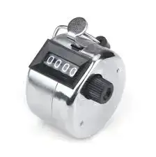

Nubart Team
Geschäftsentwicklung
Wie kann man auf elegante Weise statistische Daten über Museumsbesucher sammeln?
Die Bedeutung von Publikumsanalysen in Museen und Kulturzentren kann nicht hoch genug eingeschätzt werden. Um eine solche Analyse effizient durchführen zu können, ist es jedoch unerlässlich, umfassende und zuverlässige statistische Daten zu erheben.
Die Erhebung von Daten bei einem anonymen Publikum stellt jedoch eine große Herausforderung dar.
Vor Jahren war es üblich, dass Flugbegleiter/innen jeden Passagier mit einer geheimnisvoll hinter dem Rücken versteckten Hand begrüßten. Dabei handelte es sich nicht um einen Akt der Höflichkeit, sondern um eine diskrete Methode der Datenerfassung. Tatsächlich wurde in der versteckten Hand ein manuelles Passagierzählgerät wie dieses gehalten:
Auch und gerade im digitalen Zeitalter werden seit langem alle möglichen mehr oder weniger ausgeklügelten Tricks eingesetzt, um Informationen zu sammeln. Einige davon sind ethisch fragwürdig und ihr schlechter Ruf hat oft andere, durchaus legitime und datenschutzfreundliche Methoden in den Schatten gestellt.
Die Schwierigkeit, Daten über Museumsbesucher zu sammeln
In einem Museum ist die Zahl der Besucher vielleicht die am einfachsten zu erhebende Information: Man muss nur die verkauften Eintrittskarten zählen.
Aber von da an wird es kompliziert.
Es ist nicht ungewöhnlich, dass Museumsmitarbeiterinnen und -mitarbeiter beim Verkauf von Eintrittskarten nach dem Herkunftsland oder der Postleitzahl fragen. Das ist nicht nur für die Besucherinnen und Besucher lästig, sondern auch für das Personal eine Zusatzbelastung, besonders zu Spitzenzeiten.
Außerdem können auf diese Weise einige der für einen Museumsstrategen wichtigsten Daten nicht erfasst werden: Aus welchem Land kommen die Besucher? Wie lange haben sie sich in der Ausstellung aufgehalten? Wie hat ihnen die Ausstellung gefallen? Welche Werke haben sie am meisten interessiert?
Audioguides als Instrument zur Erhebung von Besucherdaten
Ein digitaler Audioguide ist eine geniale, unaufdringliche Möglichkeit, Daten zu sammeln und gleichzeitig den Museumsbesuchern einen wichtigen Service zu bieten.
Die Nubart Audioguides sind technisch gesehen eine PWA oder Webanwendung. Das bedeutet, dass der Besucher den mobilen Browser seines Mobiltelefons verwendet, um auf die Inhalte des Audioguides zuzugreifen. Der Browser ermöglicht den Zugriff und die Erfassung wertvoller anonymer Daten auf automatisierte Weise, ohne das Personal abzulenken oder den Besucher zu stören. Die Privatsphäre wird geschützt, da ohne Registrierung oder Anmeldung kein Zugriff auf die Identität, E-Mail-Konten oder die Telefonnummer des Benutzers möglich ist. (Für den Zugang zu den Nubart Audioguides ist selbstverständlich keine Registrierung erforderlich).
Aus den Browserinformationen lassen sich beispielsweise das Herkunftsland und die Muttersprache des Besuchers ermitteln- wichtige Informationen für das Marketing eines Museums.
Alle von Nubart gesammelten Daten sind anonym und aggregiert. Darüber hinaus wurde das statistische Dashboard intern entwickelt. Nubarts Audioguides verwenden daher weder Google Analytics noch andere statistische Informationsdienste von Drittanbietern. Dieser Aspekt ist sehr wichtig, um die Privatsphäre der Besucher zu schützen. Durch den Verzicht auf die Verwendung von Drittanbieter-Cookies zur Datenerfassung wird verhindert, dass die großen Technologieunternehmen diese Informationen kennen, identifizieren und sich zunutze machen können.
Bei einigen herkömmlichen Audioguides (d.h. Geräten) ist zwar die Erfassung von Nutzungsdaten möglich, jedoch nie die Erfassung des Herkunftslandes.
Die statistischen Berichte, die wir dem Museum oder Ausstellungszentrum zur Verfügung stellen, enthalten auch einige Daten, deren Ermittlung komplexe Algorithmen erfordert, wie z.B. die ungefähre Verweildauer in den Einrichtungen.
Das statistische Dashboard von Nubart ist interaktiv. Sie können Werte anklicken und wegklicken, vergrößern und verkleinern und viele andere Funktionen nutzen.
Nubart arbeitet kontinuierlich an der Verbesserung und Erweiterung der angebotenen Grafiken. Derzeit bietet Nubart Informationen zu:
- Anzahl der Besucher, die den Audioguide nutzen
- Herkunftsland der Besucuher
- Audioguide-Aktivität nach Land
- Die Muttersprache des Besuchers
- Audioguide-Aktivität nach Sprache
- Anzahl der Nutzer pro Tag
- Audioguide-Aktivität pro Tag
- Anzahl der Nutzer pro Stunde des Tages
- Audioguide-Aktivität nach Tageszeit
- Von den Nutzern verwendete Geräte (Betriebssystem und Browser)
- Dauer der Nutzung des Audioguides im Museum (Zeitraum zwischen dem ersten und dem letzten Klick)
- Anzahl der angehörten Audiotracks
Wie erfährt man die Meinung der Museumsbesucher
Bisher haben wir uns auf statistische Daten bezogen, die automatisch über den Browser erfasst werden können. Es gibt jedoch einige Daten, wie z.B. das Alter oder die Meinung zur Ausstellung, die nur durch eine Befragung des Besuchers ermittelt werden können.
Die üblichen Methoden, um Feedback von Museumsbesuchern zu erhalten, sind unbefriedigend:
Persönliche Interviews: Ob über eine teure Agentur oder mit Hilfe eigener Mitarbeiter/innen - einige Museen stellen jemanden mit einem Tablet am Ausgang auf, um Besucher/innen zu befragen, die gerade die Ausstellung gesehen haben. Aber diese waren mehrere Stunden auf den Beinen und sind müde und ungeduldig. Viele sind auch nicht bereit, in Gegenwart eines Museumsvertreters Kritik zu äußern oder offen zu sprechen.
Feedback-Terminals: Eine automatisierte Version der persönlichen Befragung, die oft an Flughäfen und anderen öffentlichen Orten zu finden ist. Einige haben eine Tastatur, mit der detaillierte Antworten auf viele Fragen eingegeben werden können. Andere zeigen einfach drei Emoticons an, die der Besucher im Vorbeigehen antippen kann: "Gefällt mir", "Neutral" und "Gefällt mir nicht". Ein Besucher, der vom stundenlangen Stehen müde ist, wird kaum die erste Option nutzen wollen. Und die zweite ist zu einfach, um wirklich relevante Informationen für ein Museum zu liefern.
Außerdem verursachen Miete und Wartung dieser Terminals wiederkehrende Kosten zwischen 70 und 300 € pro Monat und Gerät.
Die Nubart-Audioguides enthalten ein Feedback-Formular am Ende des Audioguides. So ist es möglich, die Aufmerksamkeit des Besuchers in einem der wichtigsten Momente eines Museumsbesuchs, am Ende der Führung, zu gewinnen. Die Struktur der Nubart Audioguides ist hier besonders vorteilhaft, da sie wie eine Zeitleiste funktioniert, durch die der Besucher scrollt und so den Weg des physischen Raumes virtuell nachbildet.
Am Ende des Nubart-Audioguides hat der Besucher oder die Besucherin also den Rundgang bereits abgeschlossen. Er oder sie hat sich einen Gesamteindruck von der Ausstellung machen können und die Emotionen, die die Ausstellung ausgelöst hat, seien es Begeisterung oder Enttäuschung, sind in der Erinnerung noch lebendig.
Die Besucher sehen das Feedback-Formular bereits auf ihrem Handy geöffnet, da sie nicht auf eine externe Seite weitergeleitet werden. Sie können den Fragebogen in wenigen Sekunden ausfüllen, sei es beim Verlassen der Ausstellung, auf dem Rückweg ins Hotel oder in der Cafeteria des Museums. Da der Fragebogen anonym und nicht persönlich ist, fühlen sie sich nicht durch die Anwesenheit eines Interviewers eingeschüchtert und können sich frei ausdrücken. Das erklärt wohl auch die hohe Rücklaufquote von rund 10% der Nubart-Audioguide-Nutzer.
Die Fragen im Nubart Feedback-Formular können individuell angepasst werden. Wir bieten die Möglichkeit, diese Kommentare in Echtzeit per E-Mail an das Museumspersonal zu senden. In jedem Fall werden alle Antworten im Kundenbereich gespeichert.
Die Qualität der Daten ist ebenso wichtig
Die Nubart-Karten sind mit einem eindeutigen und identifizierbaren, aber anonymen Code versehen und werden den Besuchern vor Ort ausgehändigt. Dies garantiert die Qualität und Aussagekraft der Daten. Da es sich um nicht übertragbare Codes oder Links handelt, können sie nicht auf einer Website oder in sozialen Netzwerken veröffentlicht werden, was die gesammelten Daten erheblich verfälschen würde. Die Statistiken der Nubart Audioguide-Karte beziehen sich nur auf Nutzer, die das Museum tatsächlich besucht haben. Unser Feedback-Formular kann nur einmal abgeschickt werden: So schützen wir die Qualität dieses Aussagen vor Trolls oder gelangweilten Kindern!
Als Teil seines Services bietet Nubart sowohl das Daten-Dashboard als auch das Feedback-Formular kostenlos für alle seine Kunden an.